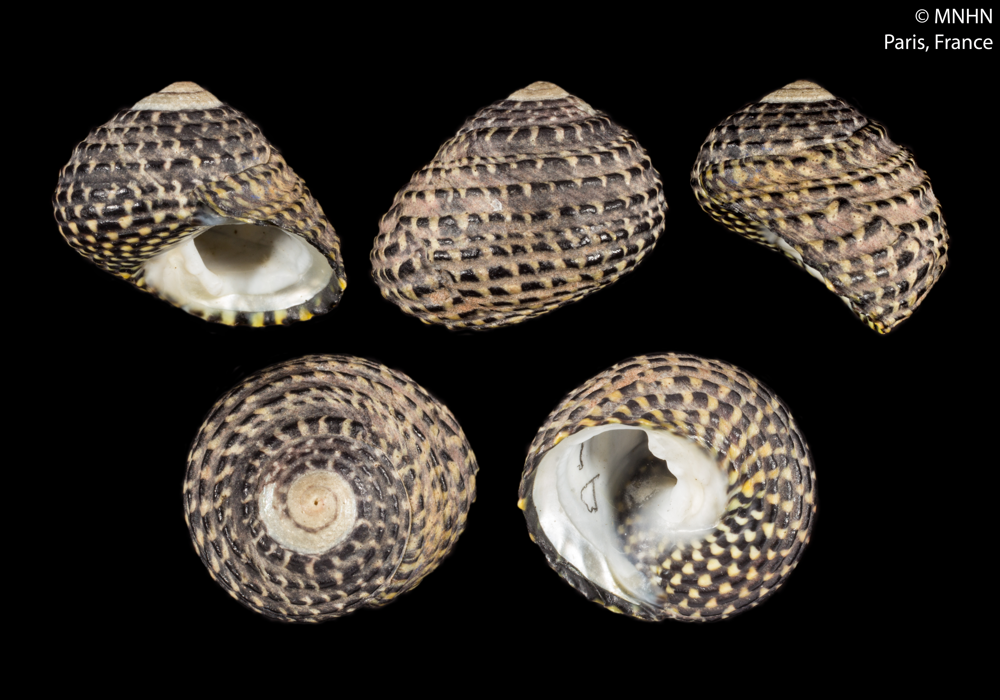
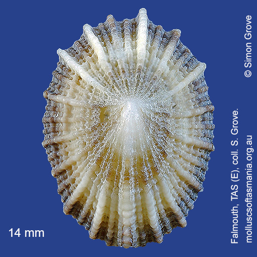
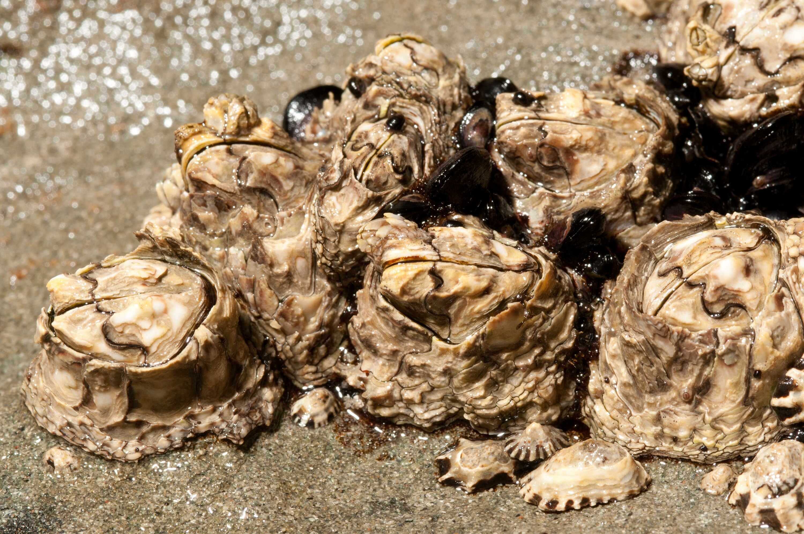
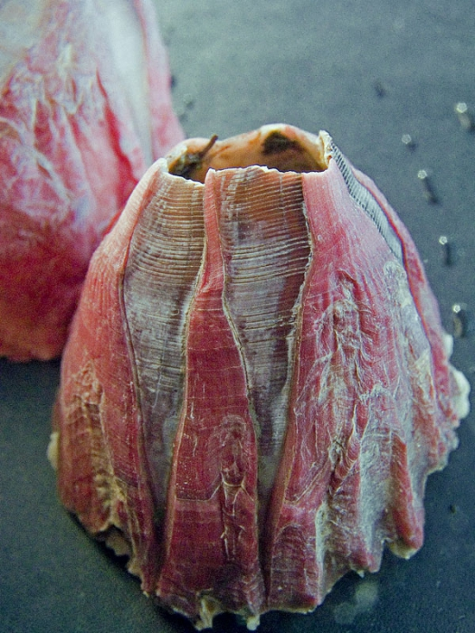
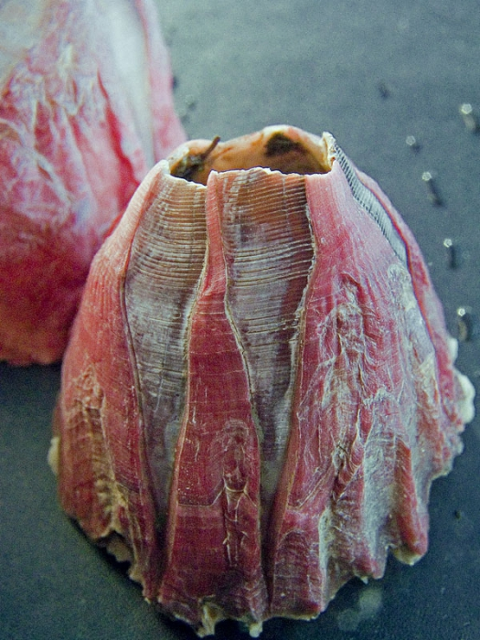
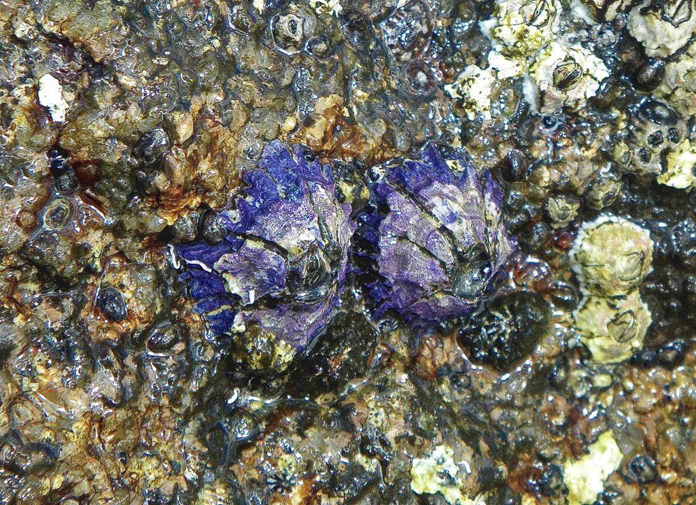
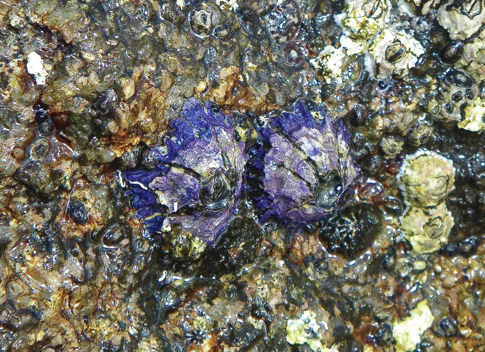

Species ID guide
Use this page to identify the species that you sample.
Note: images are only available in the HTML version of this document.
Identification guide
Common snails
Bembiicium nanum
Images from Grove, S.J. (2018).
Austrocochlea porcata
Images from Grove, S.J. (2018).
Austrococchlea concamerata

Images from Iredale, T. & McMichael, D. F. (1962) and Australian Museum.
Nerita atramentosa
Images from Grove, S.J. (2018).
Austrolittorina unifasciata
Images from Grove, S.J. (2018).
Whelks
Tenguella marginalba
Images by Donald Hobern, Femorale.com, Joop Trausel and Frans Slieker.
Limpets
Cellana tramoserica
Images from Leon Altoff and Grove, S.J. (2018).
Montfortula rugosa

Images from Leon Altoff and Grove, S.J. (2018).
Patelloida mimula

Images from Sea Shells of New South Wales and WoRMS Editorial Board (2023).
Patelloida mufria
Images from Sea Shells of New South Wales and WoRMS Editorial Board (2023).
Patelloida latistrigata

Images from Leon Altoff and Grove, S.J. (2018).
Patelloida alticostata
Images from Leon Altoff and Grove, S.J. (2018).
Notoacmea flammea
Images from Leon Altoff and Grove, S.J. (2018).
Scutellastra chapmani

Images from Grove, S.J. (2018) and Sea Shells of New South Wales.
Scutellastra peronii
Images from Grove, S.J. (2018) and Sea Shells of New South Wales.
Chitons
Sypharochiton pelliserpentis
Images from WoRMS Editorial Board (2023) and Sea Shells of New South Wales.
Acanthochiton sp.
Ischnochiton sp.
Images from Grove, S.J. (2018).
Sea stars
Parvulastra exigua
Barnacles
Balanus amphititre
Images from Wikipedia and WoRMS Editorial Board (2023).
Balanus trigonus
Images from Wikipedia, Western Australia Museum and WoRMS Editorial Board (2023).
Chthamalus antennatus

Images from Wikipedia, Museum Victoria Collections and SA Marine Life.
Catomerus polymerus

Images from Wikipedia and Museum Victoria Collections.
Tesseropora rosea
images from Wikipedia, Museum Victoria Collections, Atlas of Life and iNaturalist Australia.
Tetraclitella purpurascens
Image by Simon Grove via Flickr (2014), Atlas of Living Australia and Museum Victoria Collections.
Megabalanus coccopoma
 

Images from Wikipedia, WoRMS Editorial Board (2023) and Invasive.org.
Amphibalanus variegatus
Images from Port Phillip Bay Taxonomy, Wikipedia and Denis Riek (2021).
Austrobalanus imperator
 

Images from Wikipedia and iNaturalist Australia.